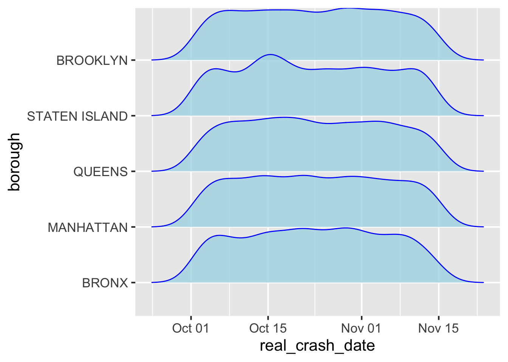
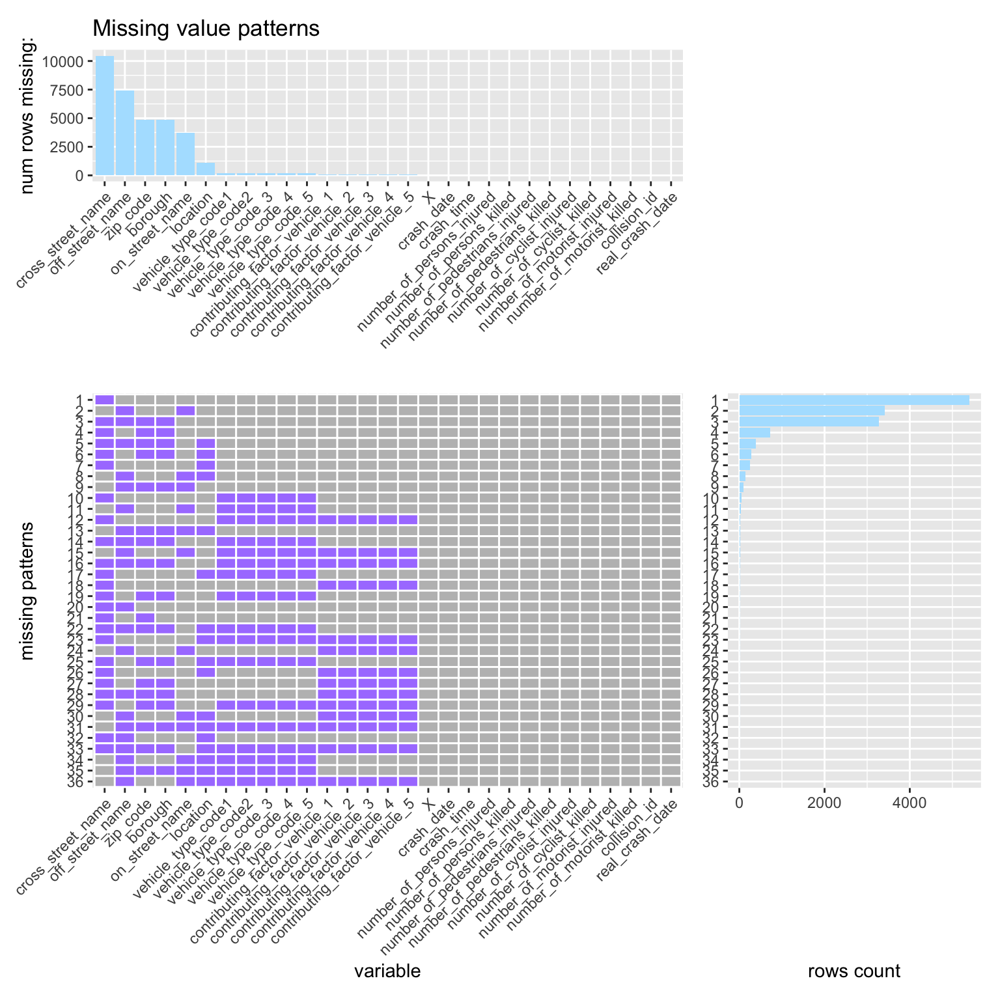
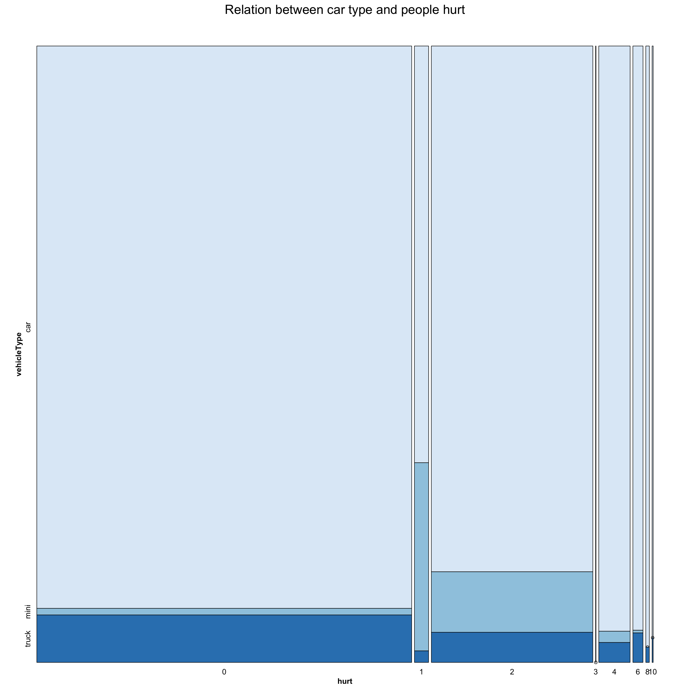

Chapter 5 Results
5.1 How prevalent is collision in each borough?
 We studied the occurrences of collision from October-01 to November-15 given by the data source. Then we have a first insight about the frequences of the collision in the total five borough in the New York city. From the graph, we could see that throught the whole time periods, the frequency stay significantly high for all these five borough. That means we cannot specify the relationship between borough and collision occurence from this step. Also, there is not convex in all these five graphs which means that collision is a non-neglectable factors that threats our life. Then we create a ridge graph below to see if we can find a clear comparison among all five borough in a single graph.
In the ridge graph, only staten island has some occasionally date contains more accidents than average. All five borough frequency of collision is still in a mild and general trend which means the average case per location is consistent through all dates. There is no clear difference in terms of the number of collisions happened within each borough since we both believe that maybe mahattan will have more collision than other borough depending on intense level of traffic density. That could also means that traffic density is not directly related to the occurence of motor accident occurence.
There could be reasons like, high traffic density induce the congestion time and decrease the average driving speed. That results in a low possibility for collision. Another possible reason is people who prefer to ride motor than car choose to take subway in companion with intense traffic density. Then we could focus down to find are there specific region within each borough are significant that we could be aware of those region for collision occurence.
We could then check through within each borough, corresponding to the total amount of occurence, which region represents by the zip_code would be representative data. We divided the count by the total occurences and generate the top 5 region that has the most percentage occurence within each borough. We could see mose borough does not have a significant region while brooklyn and manhattan both have one that has most occurences further from others. In brooklyn, the region with zip code 10027 and in manhattan, the region with zip code 10002 are representative region within each borough. We could also conclude that people could take more precaution when going to those place as they have motor accidents much more often than others.
5.2 Will the borough caused the contributing vehicle factors behaved differently?
Before doing the analysis of the potential patterns hidden between the different borough and different contribution factors, we need to first do some revisement on the original dataset since we know that for each collison, they might have more than 1 contributing vehicle factors. Thus, we could not simply just used the single column like contributing_vehicle_1to plot the graph. What we did is just creating a new row with same information but replace the contributing_vehicle_1 with contributing_vehicle_2, contributing_vehicle_3, and etc if these values existr. Then we could create the dot plot graph for the top30 contributing factors for the whole New York city which is the graph below. However, this plot may also include the cases where the borough are missing.

From the plot, the dot plot for the top30 contributing vehicle factors in New York City, we could clearly say that the unspecified contributing factors exceeds other contributing factors far away. We think that this phenomenon is attributed to the reason that it is impossible for the police to witness the collision by themselves and usually people will argue about the responsibilities of the collision. Thus it is hard to police to clearly state the contributing factors clearly and they will simply use unspecified to be the contributing factors. And we could also know that the distraction, failure to the right-way, and following too closely are the three other dominant factors to contribute the collision other than the unspecified which is not surprised since people usually will make mistakes on these aspects. But one interesting pattern is that only a small fraction of collision are caused by the alcohol investment but alcohol culture has been deeply rooted in U.S. . However, alcohol investment are the main factor to cause the collision in China which we could see that Americans are more likely still obey the rules even they got drunk. Let us focus our attention back to the hidden relationship between borough and contributing factors since from the above graph, we know nothing about borough.
We create a new graph above to see how contributing factors behave in different borough and how they behave differently compared with the graph representing the whole New York City. We could clearly see that these contribution factors behave similar with the graph representing the collision cases in the whole New York City since the order of these contributing factors are the same and dots follows the similar trends from the overall aspect.In general, each borough factors are in the order of the occurence of accidents in ther increasing order where Staten Island has least frequency. Besides, we could also see that the dots representing the borough will basically clustered together in the same row except Unspecified and Driving distraction which further proves that the borough might not exist a relationship between the borough and the contributing factors. As for the unspecified, these five borough are separte but as for driving distraction, Queen, Mahattan, and Brooklynforms a group and Bronx and Staten Island forms another group. We know that the streets are closed and narrow sometimes in Queen, Mahattan, and Brooklyn which might caused the driving distraction. But from the overall aspect, we do not think there is a clear relationship between borough and the contributing factors.
5.3 Relation of the contributing factors or vehicle type code with the people get hurt in the collision.
For this question, we want to investigate whether there is a relationship between the contributing vehicle factors and the people that got injured during the collision or a relationship between the vehicle type that got involved and the people that got injured during the collision. At first, we want to split the cases of people got injured and people got killed separately but we find that the cases of people got killed during the collision are really small. Thus, it is really hard to detect some relationship from the graph for the killed cases. We simply combine the sum of cases of people got injured and killed as case hurt to see more general relationship between severity and contributing factors. Then we plot two graph below to show the whether the hidden relationship exist or not.

Before analyzing the graph above, we need to do some predictions and revisement for the dataset. Since we want to investigate the relationship between contributing factors and the people got hurt during the collision, we first filter the data frame by only caring about the occurrences of contributing factors which is larger than 100. Then we classify these factors as three dangerous levels of driving behavior. These three levels are severe, normal and moderate and we first classify the severe behavior according to the top 10 most dangerous driving habits from Brandon Myers(March, 2021). Then for the rest factors, if it is directly correlated with drivers themselves, we classify it as normal. Otherwise, we define it as moderate since these factors are out of your control like the factor Other Vehicles.
Then, we made some assumption. Both of us think that the number of people got injured during collision should be positively correlated with the level of behavior status. Since the more danger behavior, the more people might got involved in this collision. For example, got drunk during driving is definitely a risky behavior and we usually see that Drunk driving will causes several people got hurt or even killed. Thus, we made the assumption that behavior level is positively correlated with the number of people got hurt in collision.
However, things do not happen from the truth. What reflected on the graph is not in the same case. We could see from the graph that the deep red represent the severe behavior but it gradually decreased as the number of people got injured increases. Although the fluctuation is not large, the trend is really clear which is kind of confusing. And we could also see that the normal and moderate are positively causing more people to get involved in the collision which might caused by the coincidence since the cases are really small. Thus, from the graph, we think the truth from the graph contradicts our assumption. But we are questioning that maybe risky behavior are more lethal than normal and moderate behavior but since we have fewer data that has people got killed, we can not get a precise conclusion here and maybe we will investigate and discuss it in the future. FOr now, let us focus on the relationship between vehicle type and the number of people got injured in the collision.

As we did similarly in the previous graph, for the vehicle type part, we also filter the data frame if the occurrences of vehicle type is more than 50 and we classify the type of vehicle as “car”, “truck” and “mini”. Let us explain the type of car a little bit here:
| Column Name | Represents for |
|---|---|
| “car” | both the automobile and the cart which are used for carrying people |
| “truck” | those large trucks for delivering goods |
| “mini” | smaller transportation tools like bike and motorcycle |
We both believe that the larger the vehicle type, the more people got involved in this collision since like if the truck rollover on the road or highway, it is really easy to attack nearby cars or the nearby people which causes more people to get involved. Thus, we think if the vehicle size increases, more people that got hurt will get involved which means they are positively correlated.
However, the fact that we got from the graph contradicts our assumption again. We could clearly see from the graph that the dark blue representing the truck is slowly decreasing as hurt increases. This happened same to the auto group tut the mini increases significantly when the hurt is 1 and 2. We think the reason behind this is the prevalence of motorcycle in the U.S. But we could see from the whole graph that the auto still occupies the biggest part. In a word, from this graph, the pattern is not that clear so that we can not make a concrete conclusion about the relationship between size of vehicle and the number of people got hurt during collision.
Reference: Brandon Myers is a Drivers Education and Safe Driving enthusiast. After a rollover vehicle crash and DUI. (2021, March 23). The 10 most dangerous driving habits. DefensiveDriving.org. Retrieved December 13, 2021, from https://www.defensivedriving.org/dmv-handbook/the-10-most-dangerous-driving-habits/.